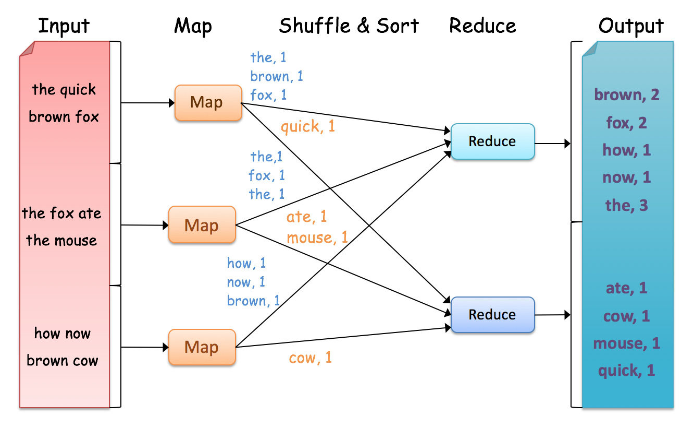

Word Count¶
Word Count is a simple and easy to understand algorithm which can be easily implemented as a mapreduce application. Given a set of text documents, the program counts the number of occurrences of each word. The algorithm consists of three main sections.
- Main Program
- Mapper
- Reducer
An example of Hadoop Word Count is as follows:
{kind=link}
Mapper:
void map(file, text) {
foreach word in text.split() {
output(word, 1);
}
}
The map function emits each word plus an associated count of occurrences (just a “1” is recorded in this pseudo-code). The input document is tokenized, where key is document name and value is document contents.
Reducer:
void reduce(word, list(count)) {
output(word, sum(count));
}
The reduce function sums together all counts emitted for a particular word.
Writing the Mapper Class¶
The WordCountMapper class is created by extending the Mapper class and the map function is implemented by overriding the map method in the Mapper class. The mapper function takes a key-value pair as an input and outputs a key-value pair as an output (the output is given through the context object). The key value pair that the map function takes as an input and the key value pair given as an output need not be the same type.
For instance, in the WordCountMapper the input to the map method is a key-value pair where the key is the line number and the value is the line of text in the corresponding line (line_number, line_text). It then outputs (word,1) for each word it reads in the line.
public static class WordCountMapper extends Mapper<Object, Text, Text, IntWritable> {
private final static IntWritable one = new IntWritable(1);
private Text word = new Text();
public void map(Object key, Text value, Context context) throws IOException, InterruptedException {
StringTokenizer itr = new StringTokenizer(value.toString());
while (itr.hasMoreTokens()) {
word.set(itr.nextToken());
context.write(word, one);
}
}
}
Writing the Reducer Class¶
The WordCountReducer class is created by extending the org.apache.hadoop.mapreduce.Reducer class; the reduce method is implemented by overriding the reduce method from the Reducer class. The reduce function collects all the intermediate key-value pairs <word,1> generated by the multiple map functions. It will then sum up all the occurrences of each word and output a key-value pair for each word in the text document as <word, total_occurrences>. A detailed implementation of the WordCountReducer is shown below.
public static class WordCountReducer extends Reducer<Text, IntWritable, Text, IntWritable> {
private IntWritable result = new IntWritable();
public void reduce(Text key, Iterable<IntWritable> values, Context context)
throws IOException, InterruptedException {
int sum = 0;
for (IntWritable val : values) {
sum += val.get();
}
result.set(sum);
context.write(key, result);
}
}
Writing Main Method¶
The main method sets up all necessary configurations and runs the mapreduce job.
- Job Name : name of this Job
- Executable (Jar) Class: the main executable class. For here, WordCount.
- Mapper Class: class which overrides the “map” function. For here, WordCountMapper.
- Reducer: class which overrides the “reduce” function. For here , WordCountReducer.
- Output Key: type of output key. For here, Text.
- Output Value: type of output value. For here, IntWritable.
- File Input Path
- File Output Path
public static void main(String[] args) throws Exception {
Configuration conf = new Configuration();
Job job = Job.getInstance(conf, "word count");
job.setJarByClass(WordCount.class);
job.setMapperClass(WordCountMapper.class);
job.setCombinerClass(WordCountReducer.class);
job.setReducerClass(WordCountReducer.class);
job.setOutputKeyClass(Text.class);
job.setOutputValueClass(IntWritable.class);
FileInputFormat.addInputPath(job, new Path(args[0]));
FileOutputFormat.setOutputPath(job, new Path(args[1]));
System.exit(job.waitForCompletion(true) ? 0 : 1);
}
Complete Code¶
The complete code of the WordCount example is visible below.
import java.io.IOException;
import java.util.StringTokenizer;
import org.apache.hadoop.conf.Configuration;
import org.apache.hadoop.fs.Path;
import org.apache.hadoop.io.IntWritable;
import org.apache.hadoop.io.Text;
import org.apache.hadoop.mapreduce.Job;
import org.apache.hadoop.mapreduce.Mapper;
import org.apache.hadoop.mapreduce.Reducer;
import org.apache.hadoop.mapreduce.lib.input.FileInputFormat;
import org.apache.hadoop.mapreduce.lib.output.FileOutputFormat;
public class WordCount {
public static void main(String[] args) throws Exception {
Configuration conf = new Configuration();
Job job = Job.getInstance(conf, "word count");
job.setJarByClass(WordCount.class);
job.setMapperClass(WordCountMapper.class);
job.setCombinerClass(WordCountReducer.class);
job.setReducerClass(WordCountReducer.class);
job.setOutputKeyClass(Text.class);
job.setOutputValueClass(IntWritable.class);
FileInputFormat.addInputPath(job, new Path(args[0]));
FileOutputFormat.setOutputPath(job, new Path(args[1]));
System.exit(job.waitForCompletion(true) ? 0 : 1);
}
public static class WordCountMapper extends Mapper<Object, Text, Text, IntWritable> {
private final static IntWritable one = new IntWritable(1);
private Text word = new Text();
public void map(Object key, Text value, Context context) throws IOException,
InterruptedException {
StringTokenizer itr = new StringTokenizer(value.toString());
while (itr.hasMoreTokens()) {
word.set(itr.nextToken());
context.write(word, one);
}
}
}
public static class WordCountReducer extends Reducer<Text, IntWritable, Text, IntWritable> {
private IntWritable result = new IntWritable();
public void reduce(Text key, Iterable<IntWritable> values, Context context)
throws IOException, InterruptedException {
int sum = 0;
for (IntWritable val : values) {
sum += val.get();
}
result.set(sum);
context.write(key, result);
}
}
}
Compiling the Code¶
The code for Word Count and other examples are provided in the GitHub repository at https://github.com/ADMIcloud/examples. If you haven’t already done so, please take a copy of this to your instance. This could either be done by making a clone or downloading a zip archive of the code.
Note
Git Tip
A good introduction to Git and GitHub is available at https://try.github.io/levels/1/challenges/1
To clone the repository you could use the following command.
cd ~/examples
git clone git@github.com:ADMIcloud/examples.git .
To download and unzip the zip archive of the code, you could do,
cd ~/examples
wget https://github.com/ADMIcloud/examples/archive/master.zip
unzip master.zip
rm master.zip
mv examples-master/* .
rm -rf examples-master
Once you have the code cloned (or downloaded) change directory to hadoop-wordcount and compile.
Running the Code¶
The Word Count example comes with two random text files. You can find these under ~/examples/hadoop-wordcount/src/main/resources
Create a directory in HDFS to copy these two files.
$HADOOP_PREFIX/bin/hdfs dfs -mkdir wordcount_input
$HADOOP_PREFIX/bin/hdfs dfs -put ~/examples/hadoop-wordcount/src/main/resources/*.txt wordcount_input
You can check the files in HDFS using,
$HADOOP_PREFIX/bin/hdfs dfs -ls wordcount_input
To run the mapreduce job, execute the following command .
$HADOOP_PREFIX/bin/hadoop jar ~/examples/hadoop-wordcount/target/hadoop-wordcount-1.0.jar admicloud.hadoop.wordcount.WordCount wordcount_input wordcount_output
Note
Hadoop Tip
If the wordcount_output already exists, delete it before running the code. Use the following command to delete the directory from HDFS.
$HADOOP_PREFIX/bin/hdfs dfs -rm -r wordcount_output
After the job has completed, execute the following command and check the output that was generated.
$HADOOP_PREFIX/bin/hdfs dfs -cat wordcount_output/*
You should see quite a bit of text lines where the last four lines are listed below.
with 5
work 5
you 80
your 38